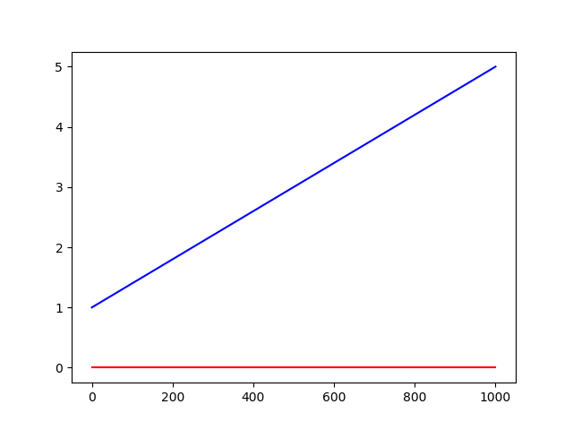
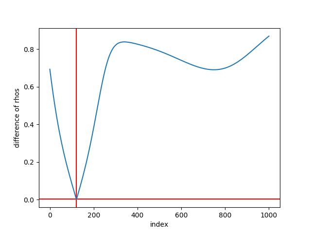

Calcback
Table of Contents
1 What is this?
This is a script to get the complex refractive index \(n = n * ik\) from the ellipsometric parameters \(\Delta\) and \(\Psi\) I got from a simulation. The result for 300nm SiO2 should look like this:
Figure 1: Refractive index should look like this
2 List of Todos:
2.1 TODO Write a loop for all wavelengths after it works for one.
2.2 TODO Then take even more wavelengths (rows)
3 Imports:
import numpy as np import matplotlib matplotlib.use('Agg') import matplotlib.pyplot as plt
4 Defining some variables:
Defining some variables for later use:
CSVFILE = "head300nmSiO2.csv" # head = only 10 rows of data phi_i = 70 * np.pi / 180 # converting incident angle from deg (first number) to rad d_L = 300 # thickness of layer in nm n_air = 1 # refractive index of air rerange = 5 # upper limit for real part imrange = 1 # upper limit for imaginary part i = 0 # only look at one wavelength (row in csv)
5 Read .csv-file:
Read the values into a two dimensional numpy array as [[lambda,Psi,Delta,nS, kS],…] (Skip columns 3 and 4)
csv = np.loadtxt(CSVFILE, usecols=(0,1,2,5,6), delimiter=",", skiprows=1)
The array looks like this:
csv
[[300. 55.2217535 84.37228319 2.6726 3.0375 ] [303. 50.11187439 93.3085011 2.7346 3.0381 ] [306. 46.35824553 98.43681392 2.7967 3.0368 ] [309. 43.50539341 101.18051798 2.8588 3.0334 ] [312. 41.29392865 102.19236832 2.9206 3.0279 ] [315. 39.48751217 101.93002 2.9822 3.0205 ] [318. 37.90308303 100.64846104 3.0435 3.0109 ] [321. 36.47640803 98.54577151 3.1042 2.9994 ] [324. 35.12615859 95.72242205 3.1644 2.9858 ]]
6 Calculate ρ
6.1 Create a matrix containing every possible refractive index (n+ik):
Change the last number in the "linspaces" to adjust the resolution.
lsp_re = np.linspace(1, rerange, 1001) lsp_im = np.linspace(0.01, imrange, 1001) re, im = np.meshgrid (lsp_re, lsp_im, copy=False) n_L = 1j * np.round(im,6) + np.round(re,6) n_L = n_L.flatten() # create onedimensional array
This gives the following matrix:
n_L
[1. +0.01j 1.004+0.01j 1.008+0.01j ... 4.992+1.j 4.996+1.j 5. +1.j ]
6.2 Calculate ρ:
6.2.1 First we define some functions:
- Snell's Law to calculate the refractive angles:
Phi is the incident angle for the layer, n1 and n2 are refractive indices of first and second medium. Returns the angle of refraction.

Figure 2: Snell's Law
def snell(phi, n1, n2): phi_ref = np.arcsin((np.sin(phi) * n1) / n2) return phi_ref
- Calculate rp and rs with Fresnel equations:
def fresnel(n1, phi1, n2, phi2): """Takes refractive indices and angles of two layers to calculate the amplitude reflection coefficients""" rs = (n1 * np.cos(phi1) - n2 * np.cos(phi2)) / (n1 * np.cos(phi1) + n2 * np.cos(phi2)) rp = (n2 * np.cos(phi1) - n1 * np.cos(phi2)) / (n2 * np.cos(phi1) + n1 * np.cos(phi2)) return rs, rp
- Calculate ρ for the layer with eq. 5.2 in Spectroscopic Ellipsometry fujiwara2009spectroscopic:
def calc_rho(rs_al, rp_al, rs_ls, rp_ls, d_L, n_L, lambda_vac): beta = 2 * np.pi * d_L * n_L * np.cos(phi_L) / lambda_vac rp_L = (rp_al + rp_ls * np.exp(-2*1j*beta)) / (1 + rp_al * rp_ls * np.exp(-2 * 1j * beta)) rs_L = (rs_al + rs_ls * np.exp(-2*1j*beta)) / (1 + rs_al * rs_ls * np.exp(-2 * 1j * beta)) rho = rp_L / rs_L return rho
6.2.2 Then we call these functions one after another to calculate ρ:
Get refractive index of the substrate (nS) and lambda from the csv:
lambda_vac = csv[i, 0] n_S = (csv[i, 3] + 1j * csv[i, 4])
Then call the above defined functions
phi_L = snell(phi_i, n_air, n_L) phi_S = snell(phi_L, n_L, n_S) # Fresnel equations: # air/layer: rs_al, rp_al = fresnel(n_air, phi_i, n_L, phi_L) # layer/substrate: rs_ls, rp_ls = fresnel(n_L, phi_L, n_S, phi_S) rho_L = calc_rho(rs_al, rp_al, rs_ls, rp_ls, d_L, n_L, lambda_vac)
6.2.3 Identify the best fitting rho with ρ = tan(ψ) * eiΔ :
# psi is in our csv-file at index 1, delta at index 2 at row "i" for lambda psi = csv[i][1] delta = csv[i][2] rho = np.tan(psi) * np.exp(1j * delta) diff = abs(rho - rho_L) # magnitude of complex number idx = np.argmin(diff) # index of the minimum minimum = diff[idx] n = n_L[idx] print("The layer has the refractive index n_L = ", n)
The layer has the refractive index n_L = (4.008+0.15157j)
7 Plot some things for checking results:
If we use a high resolution, those plots are not showing much, thats why they are only showing the first 10000 values.
7.1 Plot real and imaginary part of the created nL matrix:
Real part is blue, imaginary is red.
fig = plt.figure() plt.plot(np.real(n_L[:10000]), c='b') plt.plot(np.imag(n_L[:10000]), c="r") plt.savefig('n_L.png') './n_L.png'

7.2 Plot real and imaginary part of ρL
fig = plt.figure() plt.plot(np.real(rho_L), c='b') plt.plot(np.imag(rho_L), c='r') plt.savefig('rho_L.png') "./rho_L.png"
7.3 Plot of the difference between ρL and the given ρ and determined minimum:
The difference is shown in blue, the red lines show the minimum.
fig = plt.figure() plt.axvline(idx, c='r') plt.axhline(minimum, c='r') plt.plot(diff[:idx+10000]) plt.savefig('diff.png') "./diff.png"

7.4 Plot refractive angle phiL and nL:
nL is shown in green, real part of phiL in blue, imaginary in red. A relation between these should be visible.
fig = plt.figure() plt.plot(np.real(phi_L[:5000]), 'b') plt.plot(np.imag(phi_L[:5000]), 'r') plt.plot(np.real(n_L[:5000]), c='g') plt.savefig('phi_L.png') "phi_L.png"
Bibliography
- [fujiwara2009spectroscopic] Fujiwara, Spectroscopic ellipsometry : principles and applications, (2009).